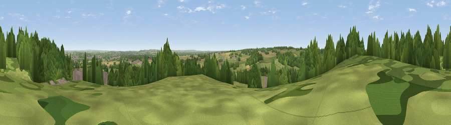

Viewpoint near Hopwas
#22093 in England · top 23% of its area beats it · near HopwasThe view, rendered

A 360° render of this exact spot computed from the terrain model, tree cover and land cover — summer colours, afternoon light, calibrated against photographs of famous viewpoints. Real trees, hedges and buildings will differ in detail.
The panorama
Grey silhouette: terrain skyline in each direction (720 bearings, Earth curvature and refraction included). Dashed green: skyline with trees (+15 m) and buildings (+8 m) as obstacles. Blue strip: how far the ground is visible on each bearing.
Where the view opens
Wedge length = distance to the farthest visible ground on that bearing (vegetation-aware). Rings at 10, 25 and 50 km.
What fills the view
39% woodland · 37% grassland · 19% cropland · 5% built-up
Angular shares of the visible panorama (visual magnitude), not map area. Landscape diversity 0.52 (0–1 Shannon).
Key numbers
More beautiful places nearby
The staircase of upgrades: each row has a higher view potential than everything closer. Driving times are estimates from straight-line distance, calibrated against real road routing — check an actual route before setting out.
| Place | Direction | Drive | Score |
|---|---|---|---|
| Viewpoint near Hopwas | NE · 1 km | ~2 min | 57.8 |
| Viewpoint near Streetly | WSW · 12 km | ~22 min | 69.5 |
| Viewpoint near Stanton under Bardon | ENE · 31 km | ~49 min | 76.0 |
| Viewpoint near Woodhouse Eaves | ENE · 36 km | ~55 min | 77.7 |
| The Ercall | W · 52 km | ~73 min | 79.4 |
| Viewpoint near Little Wenlock | W · 53 km | ~75 min | 84.2 |
| The Wrekin | W · 54 km | ~75 min | 85.0 |
| Viewpoint near Little Wenlock | W · 54 km | ~75 min | 86.6 |
52.62834, -1.76099 · source: screening · position refined by local search. Computed location — check access rights before visiting.